I
La mariée
La mariée, sublimée
Robe princesse perlée, diadème, maquillage lumineux et coiffure soignée : pour le grand jour, nous préparons la mariée de la tête aux pieds.
Voir toute la collectionSalon de beauté · Sbeitla
Maquillage, coiffure et tenues pour la mariée et ses invitées : de la robe blanche aux tenues traditionnelles parées d'or, nous vous préparons pour chaque moment de la fête.
فضاء رواء للعروسة
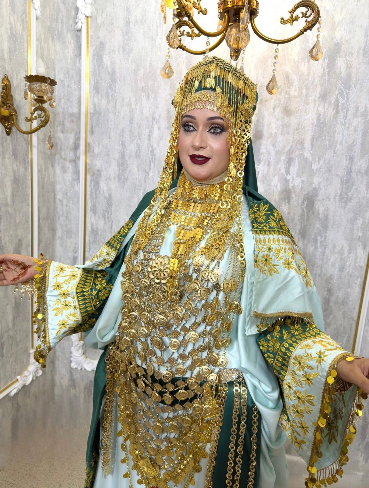
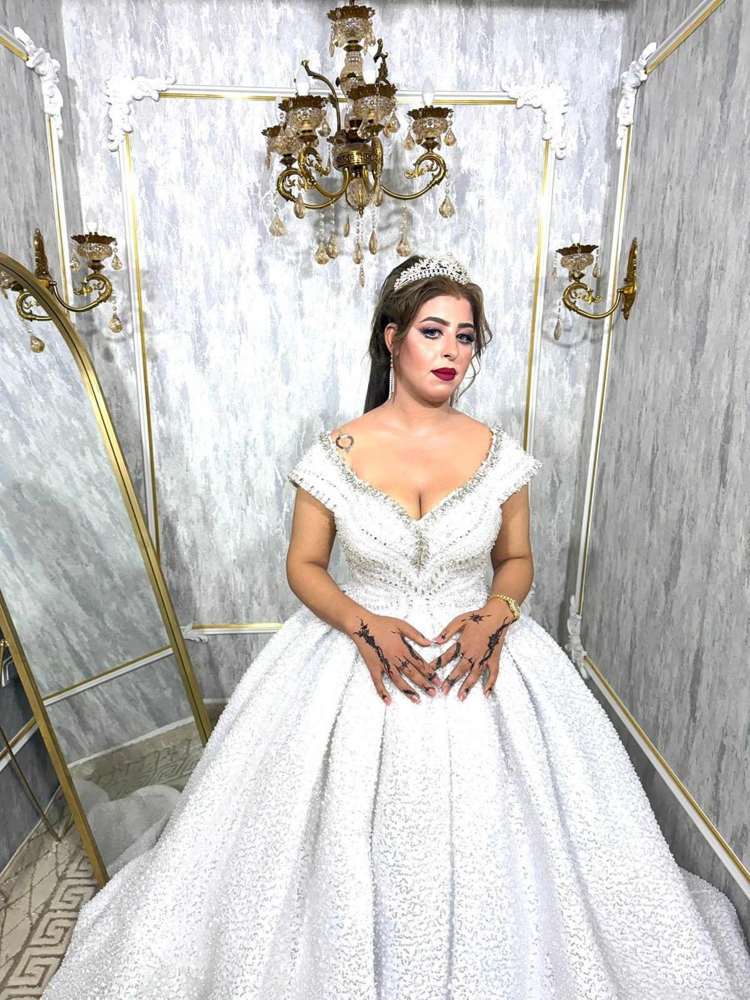
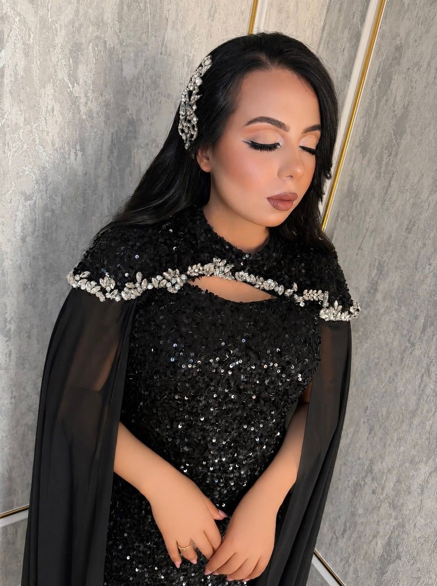
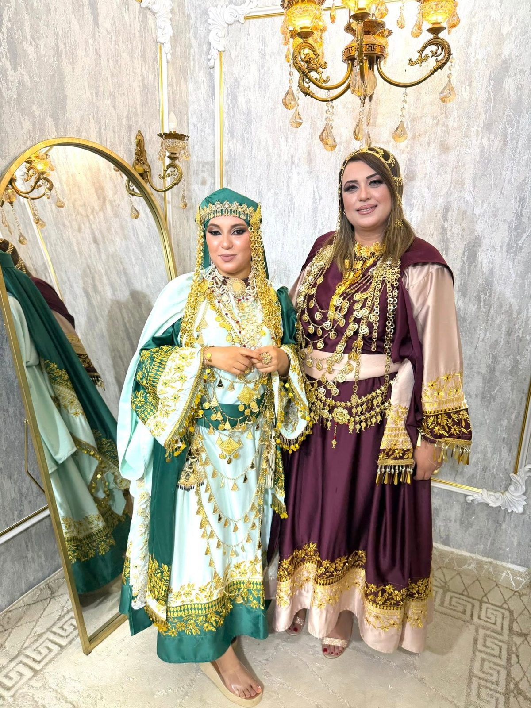
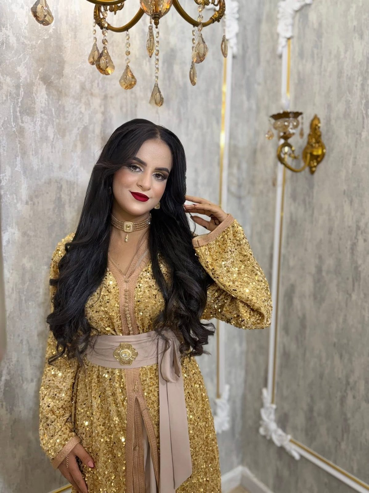
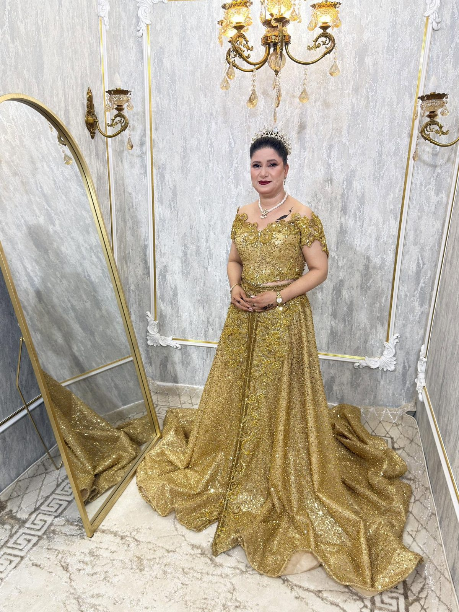
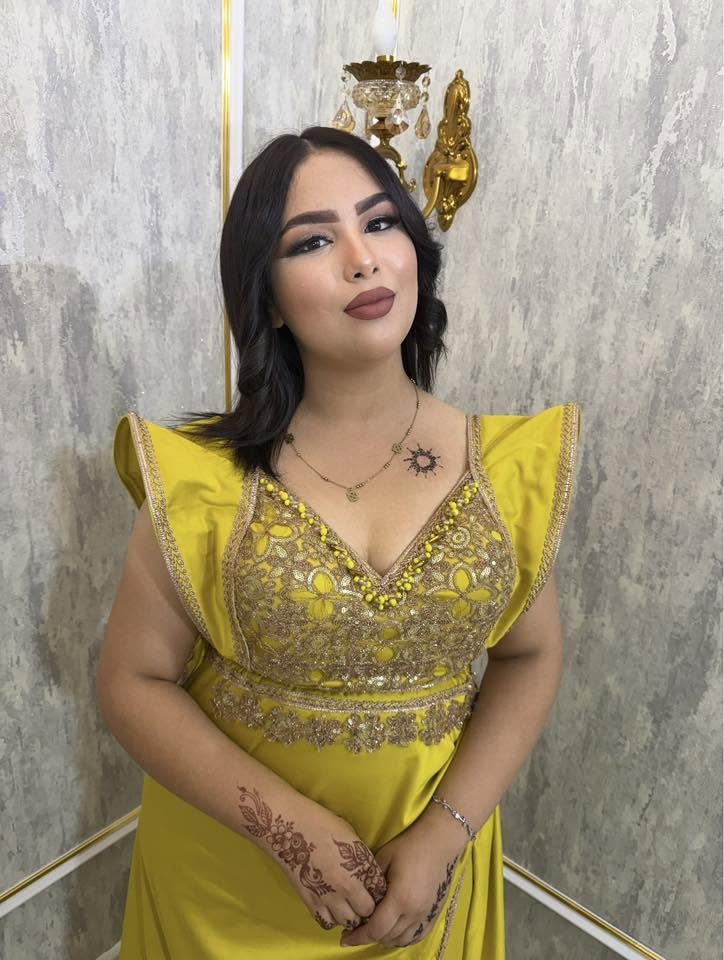
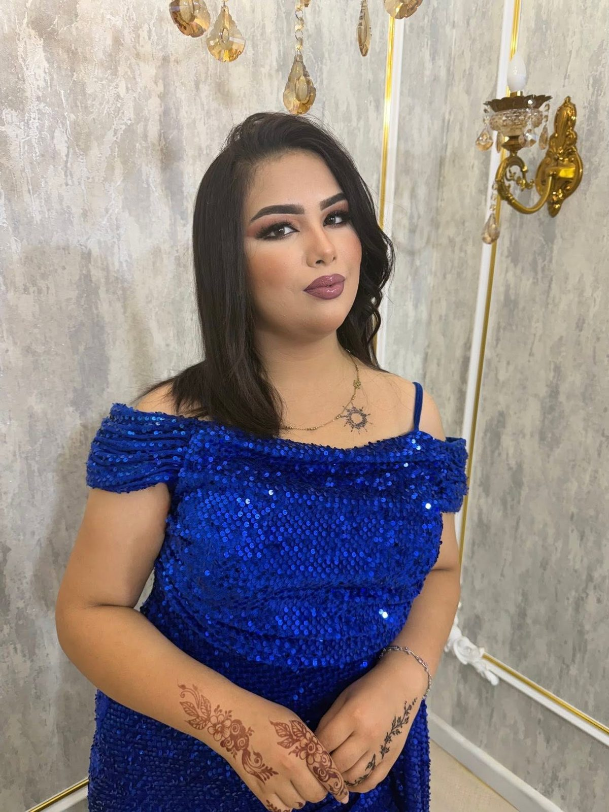
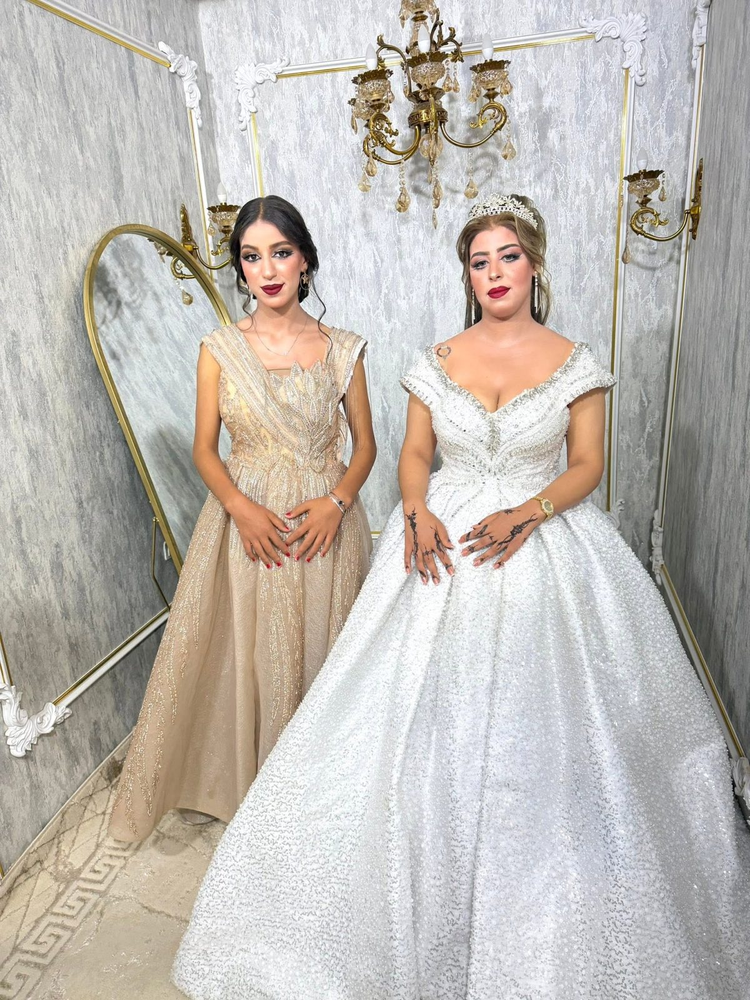
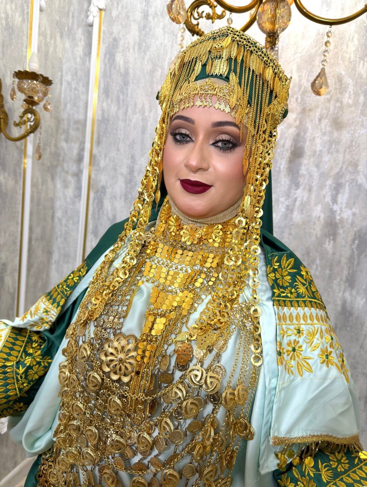
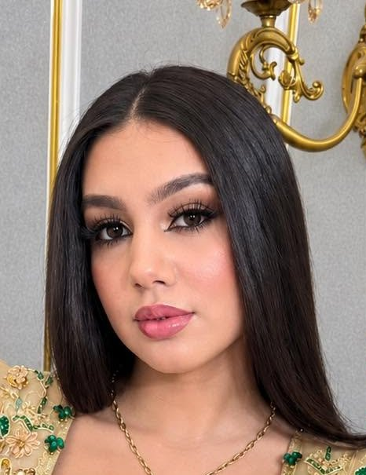
Nos univers
La mariée
Robe princesse perlée, diadème, maquillage lumineux et coiffure soignée : pour le grand jour, nous préparons la mariée de la tête aux pieds.
Voir toute la collectionTenues traditionnelles
Tenues brodées d'or, coiffes et parures de bijoux : nous habillons et maquillons la mariée pour chaque moment de la fête, dans le respect des traditions.
Voir toute la collectionSoirée & invitées
Caftans à sequins, robes bleu roi ou noires à cape : maquillage, coiffure et tenue pour les fiançailles, le henné et toutes vos soirées.
Voir toute la collection« Chaque mariée mérite de se sentir reine le jour de sa fête. »
Lookbook
Maquillage & coiffure
Teint lumineux, regard intense, lèvres rouge profond ou nude : chaque maquillage et chaque coiffure sont pensés avec votre tenue, pour une mariée parfaite en salle comme sur les photos.
On parle de votre fête, de vos tenues et de vos envies.
Robe blanche, tenues traditionnelles, caftans de soirée.
Maquillage et coiffure validés ensemble avant le jour J.
Habillage, maquillage et coiffure au salon : vous n'avez qu'à briller.
Rendez-vous
Mariée, fiançailles ou soirée : appelez-nous ou écrivez-nous, nous vous répondons rapidement.